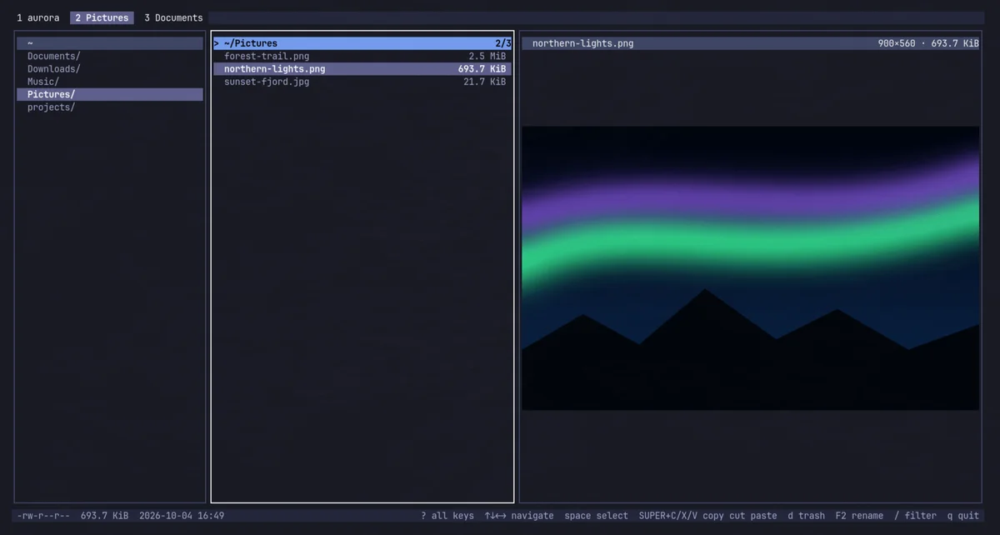

tidefiles
v0.7.0 · GoA keyboard-first, three-pane file manager for your terminal. Previews code, images and markdown right in the pane, browses inside zip and tar archives like ordinary folders, sends deletes to a real trash with undo, and follows your Omarchy theme.
arch=amd64 # or arm64 curl -L https://github.com/linuxbren/tidefiles/releases/latest/download/tidefiles_linux_$arch.tar.gz | tar xz tidefiles install -Dm755 tidefiles ~/.local/bin/tidefiles
Linux only, x86_64 or arm64. Static binary, updates itself. Packages and Nix too — see the repo.